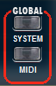
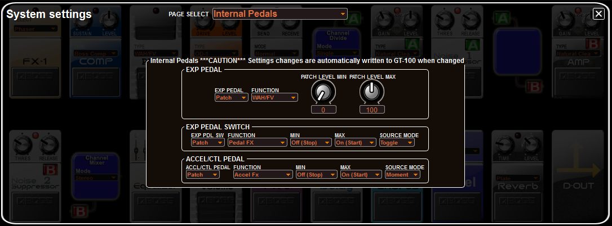
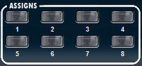
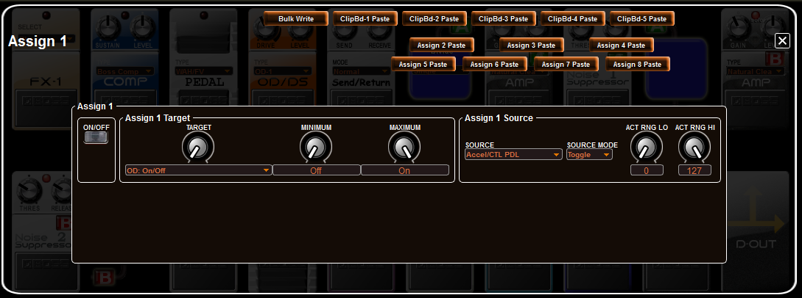

IndexEditing Controller Assignments
Controller Assignment Overview
Controller
assignment is a powerful features of the KATANA. If it seems
confusing at first, that's not your fault because it is a bit complex.
However, that complexity is by design and is intended to provide you
with tools to make extremely unique sounds with your KATANA. It's a lot
of functionality, so let's try to break it down into simple
explanations of each part. The good news here is that there are really
only two main parts, the GLOBAL and PATCH Modes. In just a few minutes,
you should know how this controller stuff works. In the next
decade or so, you will squeeze many unique sounds from your KATANA by
leveraging the power of the controller assignments. Or...maybe you just
want a very simple setup where the controllers always do the same
thing, every time, on every patch. That's easy too. However, by
default, Roland ship the KATANA in PATCH Mode and here's how they
describe it in the owner's manual:
"When the KATANA is shipped, each patch assigns the pedals to the functions that are most useful for that particular patch."
The
KATANA controllers include the CTL footswitch, EXP pedal and
switch, GK knob, and GK S1/2 switches, whereby each can be
independently configured to operate exclusively in one of two modes,
either GLOBAL or PATCH. There are important differences in how these
two controller modes operate and you need to understand how Controller
Assignment Mode is set for each controller in order your use the controllers effectively. You can set the controller mode using the KATANA FloorBoard Editor's System/Global > System Pedal and GK panel.
Important concepts to understand when setting the controller mode:
- GLOBAL Mode
In GLOBAL Mode, the controller has the same function (does the same thing) for every patch in the KATANA memory, regardless of PATCH level controller assignment settings (ASSIGNS). You can independently set each controller to either GLOBAL Mode or PATCH Mode.
IMPORTANT: The GLOBAL Mode settings override all conflicting PATCH level controller assignment settings. In GLOBAL Mode the function of the control is set on the System/Global > System Pedal and GK panel to any setting except "Patch setting", which grants PATCH MODE control access to the specified controller.
- PATCH Mode (ASSIGNS 1-8)
In PATCH Mode, controllers can have completely different functions for
each KATANA patch.
For example, in PATCH Mode, you can set the CTL pedal so that in one
patch the CTL Pedal can enable/disable a chorus effect and in another
patch it can enable/disable a distortion effect. There are eight (8)
separate PATCH Mode Controller ASSIGNS that can each be individually
configured, and each patch can use any combination of the eight
controller ASSIGNS. Use the ASSIGN ON/OFF switch to enable or
disable an assign on a patch.
IMPORTANT: It is possible to configure PATCH Mode settings in ASSIGNS 1-8 that may contain parameters that conflict with other numbered
ASSIGNS 1-8 settings or Global Control Mode settings, in which case if used together, you may experience
unusual or even undesirable behavior.
In short, I like to think of the controller assigns like this...
- If set to GLOBAL Mode
- You have a "simple" control that works the same for all patches
and you can pick what that function is for ALL patches.
- If set to PATCH Mode
- You can configure up to eight separate control ASSIGNS which are
available to each patch, and you can pick different combinations
of control functions for each of the eight control ASSIGNS.
Not so hard, really. But, YOU have to decide which mode works best for you, for how and what you play, and for how you want the KATANA to sound.
More information in the Owner's Manual: To set the control modes from the KATANA itself, the Roland Owner's Manual includes a section titled "Making a Pedal Have the Same Operation for All Patches" that describes the GLOBAL level control assignments and another section titled "Changing the Pedal Assignments for Each Patch" that describes the PATCH level control assignments. Both sections tell you how to set these parameters using the KATANA's internal menus,
provide examples, and provide lists of all of the available
parameters and their ranges. The KATANA FloorBoard Editor offers all of the same
parameters as options that you select from the System/Global > System Pedal and GK and the ASSIGNS 1-8 panels.
GLOBAL Mode Configuration
To configure the controller assignment modes, open the editor's System/Global panel by clicking the SYSTEM button at the top of the editor's main panel:

The System/Global panel opens. To open the System Pedal and GK panel, click on the Select field (at the top) and pick the System Pedal and GK panel, which opens and looks like the following screenshot.

There
are seven CONTROLLER sub-panels shown, each with a FUNCTION field from
which you can select the function to assign to that control. The
controls include:
- CTL Pedal - The CTL pedal on the KATANA floor unit.
- EXP Pedal SWITCH - The virtual toe-switch on the EXP pedal on the KATANA floor unit.
- GK Volume - The knob on the GK pickup or the GK guitar controller.
- EXP Pedal (while EXP Pedal Switch is 'OFF') - KATANA floor unit.
- EXP Pedal (while EXP Pedal Switch is 'ON') - KATANA floor unit.
- GK SWITCH 1 - The S1 switch on the GK pickup or GK guitar controller.
- GK SWITCH 2 - The S2 switch on the GK pickup or GK guitar controller.
IMPORTANT: The GLOBAL Mode settings override all conflicting PATCH controller assignment settings. To enable GLOBAL Mode, select the global FUNCTION for that control in the System/Global > System Pedal and GK panel to any setting except "Patch setting", which delegates PATCH level control to the specified controller as set in ASSIGNS 1-8.
In the screenshot above, the CTL Pedal FUNCTION is set to "Patch setting",
which delegates control of the CTL Pedal to ASSIGNS 1-8, which you can
enable or disable (set ON/OFF) using the ASSIGNS settings for each
KATANA patch. It's the combination of settings that determine the
operation of the controllers. Remember, if the FUNCTION is set to "Patch setting" on this panel delegates, control delegates to patch via the ASSIGNS 1-8.
Example: GK Volume (and EXP Pedal) System/Global Control Functions
Note:
Although this example uses the GK Volume control, the same "knob or
potentiometer" FUNCTIONS can be controlled using the EXP Pedal (in
while ON and OFF state). The CTL Pedal, EXP Pedal Switch, and GK 1 &
2 switches control other functions, and are explained separately in the
next example.
There are multiple global FUNCTIONS that can be assigned to the GK Volume knob, including:
- OFF
- The control does nothing...ever. Good for when you don't
want accidentally change something, don't like using the GK Volume
knob, etc.
- Patch setting - Delegates control to the patch level using ASSIGNS 1-8
- Patch Volume - The GK Volume knob controls the volume for ALL KATANA patches (globally).
- Tone Volume - The GK Volume knob controls the volume for selected PCM 1/2, COSM, and Normal PU tones for ALL KATANA patches (globally).
- Pitch Bend - The GK Volume knob controls the Pitch Bend function for selected PCM 1/2 and COSM (Modeling) tones for ALL KATANA patches (globally).
- Modulation - The GK Volume knob controls the Modulation function for selected PCM 1/2 and allows min/max settings.
- Cross Fader - The GK Volume knob
controls the cross fading between the COSM modeling and Normal PU, so
you can mix between guitar or bass sounds using the knob.
- Delay Level - The GK Volume knob controls the delay level with a min/ max scale of 1-128. The Delay effect must be enabled in the patch to notice the results.
- Reverb Level - The GK Volume knob controls the reverb level with a min/max scale of 0-100. The Reverb effect must be enabled in the patch to notice the results.
- Chorus Level - The GK Volume knob controls the chorus effect level with a min/max scale of 0-100. The Chorus effect must be enabled in the patch to notice the results.
For
example, in the screenshot above, the GK Volume is set to "Patch
Volume", which means that the GK Volume knob controls the output level for ALL KATANA patches,
with the range set in the patch's TONE settings. You might think of
this as a "global master volume" configuration. However, you may use a
separate volume pedal or like to use the EXP Pedal for this function,
in which case you would probably select another function for the
GK Volume control, either globally or per patch. Some functions include
parameter controls for that function, such as min/max knobs and value
fields that determine the operating range for the control knob when
configured.
CTL Pedal, EXP Pedal Switch, and GK 1 & 2 Switches System/Global Control Functions
For the CTL Pedal, EXP Pedal Switch, and GK 1 & 2 Switches, you can configure the following functions:
- Hold - CTL pedal only
- Tap tempo
- Tone SW - includes ON and OFF switches for each TONE (PCM 1/2., MODELING, and NORMAL PU)
- Amp SW
- MOD SW
- MFX SW
- Delay SW
- Reverb SW
- Chorus SW
- Sound style inc
- Sound style dec
- Bank number inc
- Bank number dec
- Patch number inc
- Patch number dec
- Audio Player Play/Stop
- Audio Player Song Inc
- Audio Player Song Dec
- Audio Player SW
- V-Link SW
NOTE: In the list above, SW = switch, inc = increment, dec = decrement.PATCH Mode Configuration
To configure the controller assignments in patch mode, you must first set the controller FUNCTION to "Patch setting", as described in the previous section on global mode settings and in the screenshot above, delegating that control to ASSIGNS 1-8, which you can
enable or disable (set ON/OFF) using the ASSIGNS settings for each
KATANA patch. It's the combination of settings that determine the
operation of the controllers. Remember, if the FUNCTION is set to "Patch setting" on the System/Global > System Pedal and GK panel, that control delegates to patch via the ASSIGNS 1-8. If the patch settings are complete, you can proceed to set the control ASSIGNS.
In PATCH Mode, controllers can have completely different functions for
each KATANA patch. For example, in PATCH Mode, you can set the CTL pedal
so that in one patch the CTL Pedal can enable/disable a chorus effect
and in another patch it can enable/disable a distortion effect. There
are eight (8) separate PATCH Mode Controller ASSIGNS that can each be
individually configured, and each patch can use any combination of the
eight controller ASSIGNS. Use the ASSIGN ON/OFF switch to enable or
disable an assign on a patch.
IMPORTANT: It is possible to configure PATCH Mode settings in ASSIGNS 1-8 that may contain parameters that conflict with other numbered
ASSIGNS 1-8 settings or Global Control Mode settings, in which case if used together, you may experience
unusual or even undesirable behavior.
Control ASSIGNS 1-8 Configuration
To open the ASSIGNS 1-8, click on one of the ASSIGN buttons at the top of the KATANA FloorBoard Editor:
The
ASSIGN buttons are also status indicators that are lit in patches where
they are enabled (ON) and dark in patches where they are disabled
(OFF).
The following screenshot is of the Assign 1 panel. The Assign 2-8 panels look and work the same way, only they are numbered accordingly.
There are eight basic parameters per control assign, as follows:
- ON/OFF - Turns ASSIGN 1–8 on/off. This enables or disables the controller as defined in this Assign for the current patch.
- TARGET - Select the KATANA parameter that the controller modifies, e.g. PCM1 Tone Octave (as above).
- MINIMUM and MAXIMUM - Set the minimum and maximum values for the parameter. The values will depend on the parameter assigned by TARGET.
- SOURCE - Select the controller (e.g. GK S1, CTL, MIDI CC#, etc) to use for adjusting the parameter.
- SOURCE MODE - Set how the value will change for each operation, as a momentary contact or as a toggle switch.
- MOMENT
- The value will normally be off (minimum value), and will be on
(maximum value) only while the control is being operated.
- TOGGLE - The value will toggle between off (minimum) and on (maximum) each time the control is operated.
- ACT RING LO/HI - Low range is 0–126 and the high range is 1-127
- Within
the operating range of the source, this specifies the range that will
control the target parameter. The target parameter will be
controlled within the range specified by ACT RANGE LO and ACT RANGE HI.
Normally, you should leave ACT RANGE LO at “0” and ACT RANGE HI at
“127” to utilize the entire range or as a switch.
NOTE:
Although you can enable as many as all eight ASSIGNS to a patch, you
should use caution configuring the ASSIGNS and enabling multiple ASSIGNS
to avoid controller conflicts. Nothing prevents you from using several
in combination, but you should be aware of the results for full user
satisfaction.
More information in the Owner's Manual: To set the control modes from the KATANA itself, the Roland Owner's Manual includes a section titled "Making a Pedal Have the Same Operation for All Patches" that describes the GLOBAL level control assignments and another section titled "Changing the Pedal Assignments for Each Patch" that describes the PATCH level control assignments. Both sections tell you how to set these parameters using the KATANA's internal menus,
provide examples, and provide lists of all of the available
parameters and their ranges. The KATANA FloorBoard Editor offers all of the same
parameters as options that you select from the System/Global > System Pedal and GK and the ASSIGNS 1-8 panels.ADVANCED: External MIDI CC Message Control of KATANA Parameters
You
can also use MIDI CC messages from DAW or MIDI control software or
from external MIDI equipment to control parameters in KATANA
patches. External MIDI control of these parameters can be configured in
the ASSIGNS panels, thus requiring patch level control assignments. To
program the MIDI CC sending software or equipment, refer to its
documentation. On the Assign 1-8 panels, select the corresponding "CC# Midi Controller" SOURCE in the Assign n Source sub-panel. As always, watch for potential conflicts with your other assigns though!